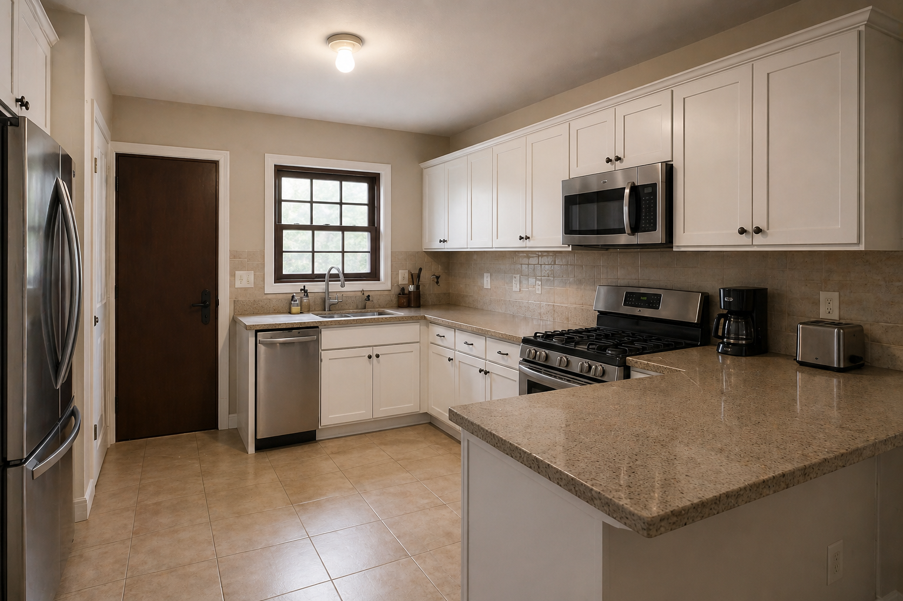

Blog / Kitchen Remodeling Timeline

Many homeowners ask about price first, but timeline is usually the next big concern. That makes sense. The kitchen is one of the most used spaces in the house, so any disruption quickly affects meals, routines, storage, and the overall comfort of daily life.
There is no single timeline that fits every kitchen. A straightforward refresh can move differently from a project that includes new cabinets, drywall repair, flooring, counters, backsplash, lighting, painting, and finish work. What matters most is understanding which parts of the project control the schedule.
Why kitchen remodel timelines vary so much
A kitchen remodel is not one task. It is a sequence of connected tasks that need to happen in the right order. Even when the room is small, decisions about demolition, wall condition, cabinets, countertop fabrication, flooring transitions, paint, and appliance placement can affect the finish date.
Timelines usually depend on:
- How much of the existing kitchen is being replaced
- Whether the layout is staying the same or changing
- Condition of walls, ceilings, floors, and old finishes
- Cabinet, countertop, and fixture lead times
- Flooring type and subfloor preparation
- Drywall repair, painting, trim, and detail work
- How early design and material decisions are finalized
Planning before demolition saves time later
One of the easiest ways to lose time in a remodel is to start too soon without enough planning. Homeowners often feel excited to begin demolition, but kitchen projects move better when the major decisions are already clear: layout, cabinet plan, counter direction, flooring approach, appliance needs, lighting, and finish priorities.
Good planning does not mean every tiny detail must be perfect on day one. It means the core project should make sense before work starts. If the scope keeps changing after demolition, the timeline usually stretches with it.
Material selection can control the calendar
Some kitchens move quickly because materials are straightforward and available. Others slow down because cabinets, countertops, specialty fixtures, backsplash tile, or flooring are still undecided or delayed. Even a well-managed project can lose momentum if a key material is missing when the next step depends on it.
This is why timing conversations should include material readiness, not just labor. A contractor can only move as smoothly as the project sequence allows.
Trying to estimate how long your kitchen project may take?
Text WBNextlevel photos of your kitchen, your city, and the type of update you are considering.
Text 813-591-7560 Request EstimateDemolition and prep are only the beginning
Many homeowners think the project is moving fast once demolition begins. In reality, demolition is just the opening step. After old materials come out, the true condition of the kitchen becomes clearer. That is when damaged drywall, uneven surfaces, old patchwork, worn subfloors, or outdated finish conditions often show up.
Those discoveries do not always mean something went wrong. They are part of why remodeling needs flexibility. It is better to address issues during preparation than hide them behind expensive new finishes.
Cabinets, counters, and sequencing matter
Cabinets are one of the biggest schedule drivers because so much work connects to them. The layout affects electrical planning, wall preparation, countertop measurements, backsplash lines, and appliance spacing. Once cabinets are in place, other tasks can move more precisely.
Countertops can also shape the timeline because measurement, fabrication, and installation often need to happen after cabinet placement. A kitchen remodel that includes backsplash work, detail trim, or adjusted wall lines may need careful sequencing so the finished result looks clean and consistent.
Flooring, drywall, and painting can extend or smooth the process
Kitchen remodels often connect to surrounding finishes. If old flooring comes out, transitions to nearby rooms may need attention. If backsplash removal damages walls, drywall repair becomes part of the path forward. If the kitchen is getting brighter finishes or new cabinetry, painting may need to happen at the right point to avoid rework.
These are not side details. They are part of what makes a kitchen feel fully remodeled instead of partially updated. That is also why kitchens often involve flooring and wall work at the same time.
Small kitchens are not always fast kitchens
A smaller kitchen may have less square footage, but that does not automatically make the project simple. Tight work areas, exact cabinet alignment, appliance clearances, backsplash cuts, and careful finish details can still require time and attention.
Sometimes a larger kitchen with a straightforward scope moves more predictably than a smaller kitchen where every inch matters.
How homeowners can help keep the remodel moving
- Finalize the main decisions before work starts
- Send clear photos and project goals early
- Be realistic about how much disruption the kitchen can handle
- Avoid changing materials or scope after key work begins unless necessary
- Ask questions early about what depends on cabinets, counters, flooring, or wall repair
- Be clear about whether the kitchen is for resale, rental, or long-term family use
Florida homes need practical scheduling decisions
Florida homes can vary a lot in age, wall condition, humidity exposure, and previous repair history. A project in Tampa or Riverview may reveal different conditions than a project in Brandon or another nearby community, even when the kitchens look similar in photos at first.
The most helpful timeline conversations are the ones grounded in the actual kitchen, not a generic promise. A serious remodeling company should talk about sequence, preparation, and likely variables instead of pretending every kitchen follows the exact same calendar.
Cost and timeline usually move together
If you are comparing options, it helps to understand that timeline and cost are connected. More scope usually means more time. More preparation usually means more time. Better finish coordination usually means more time. That does not mean the longer project is automatically better. It means the schedule should match the actual work being discussed.
For a deeper look at scope and budget, read our guide on how much a kitchen remodel costs in Tampa Bay.
Questions to ask before you approve the schedule
- What parts of the project are most likely to affect the timeline?
- Which materials need to be decided first?
- What happens if wall or floor damage is found during demolition?
- When should painting, drywall, and flooring happen in the sequence?
- What should I do to prepare the kitchen before work starts?
- How will communication work if the scope changes?
Helpful related pages
Learn more about kitchen remodeling, flooring, drywall repair, and interior painting. If you are still preparing your first message, our article on how to request a remodeling estimate in Florida can help.
You can also review our guide on choosing a reliable remodeling contractor in Tampa Bay before approving a project plan.
Kitchen remodel timeline FAQs
What usually slows down a kitchen remodel?
Material delays, late design decisions, hidden wall or floor damage, layout changes, and added scope after demolition are common reasons a kitchen remodel takes longer.
Can I use my kitchen during the remodel?
Usually only in a limited way. Most homeowners should expect part of the project to interrupt daily kitchen use, especially during demolition, cabinet work, countertop installation, flooring, and painting.
Is a small kitchen remodel always faster?
Not always. A small kitchen can still involve tight work areas, drywall repair, cabinet changes, flooring transitions, and finish details that affect the timeline.
Should I order materials before scheduling the project?
Material timing should be discussed with the contractor. Cabinets, countertops, fixtures, flooring, and specialty items can affect the project schedule, so ordering decisions should match the actual scope and sequence.
Can I send photos before asking about kitchen remodel timing?
Yes. Photos help WBNextlevel understand the current layout, condition, and likely scope, which makes timeline conversations much more accurate.
Planning a kitchen remodel in Florida?
Text WBNextlevel at 813-591-7560 or request a free estimate online. Send kitchen photos, your city, and whether you are mainly asking about cost, timing, or both.
Request a Free Estimate Text Us